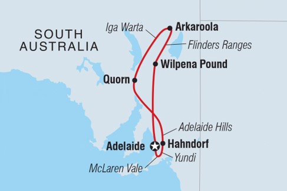
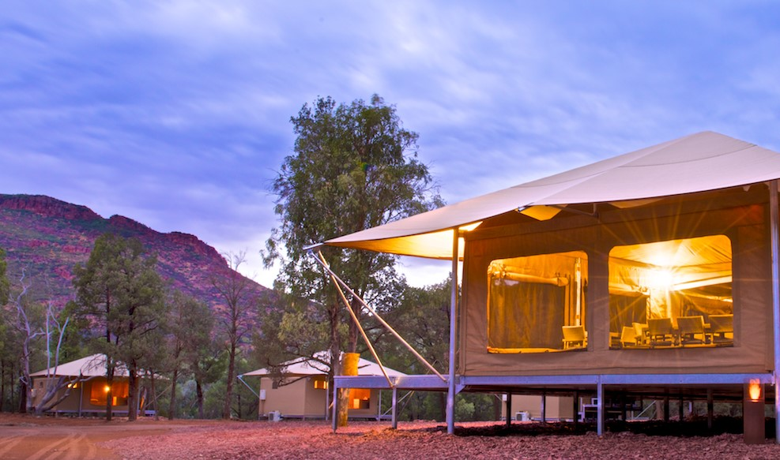
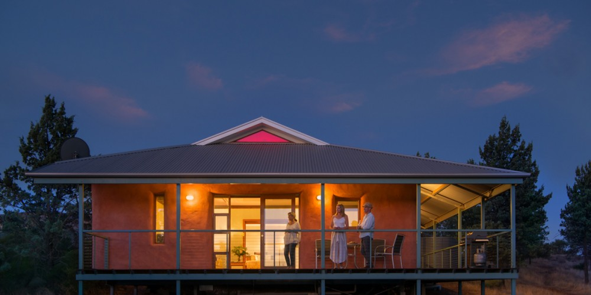
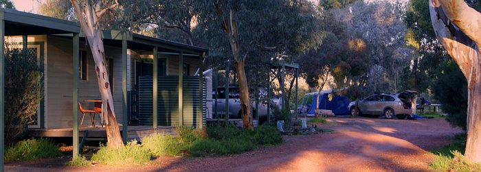
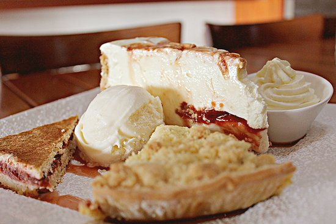
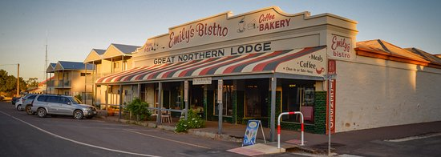
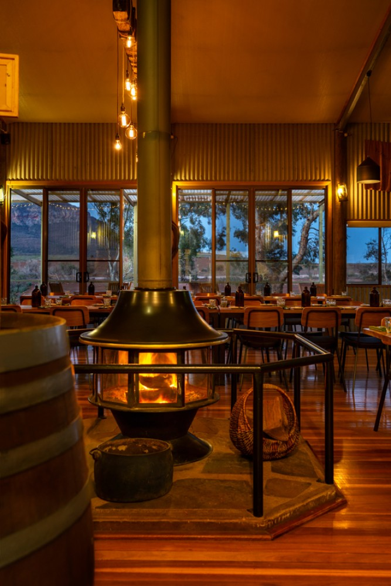

Hi, Lucas. We believe that Flinders Ranges is a perfect holiday destination for you and your brother to stay for the 2 weeks. This place is particularly ancient compared to most destinations here in Australia, being formed 800 million years ago.
DATES AND LOCATIONS
By your request, you will depart on the 7th of October. Your ideal location is Flinders Ranges, however you will more options such as the great town Quorn and the crater-like Wilpena Pound.
ACCOMMODATIONS
FLINDERS BUSH RETREATS ECO TENT
Address: 651 Willow Waters Rd, Hawker SA 5434
Flindres bush retreats eco tent is right up your alley. It is expectedly small however this can be great to be more connected to your partner. A campfire is located right outside to enjoy the morning or night with welcoming arms.

WILPENA POUND CAMPGROUND
Address: 651 Willow Waters Rd, Hawker SA 5434
Wilpena pound campground is a great place if interested in a more camp-style but nonetheless modern accomodations.
RAWNSLE PARK STATION ECO-VILLAS
Address: Flinders Ranges Way, Hawker SA 5434
Rawnsle Park Station Eco-villas are another that incorporate sustainable features in its design. Being high in the canopy of the enclosing trees offers a wonderful opportunity to take your camera out.
QUORN CARAVAN PARK
8 Silo Rd, Quorn SA 5433
Quorn Caravan Park offers many small cabins to get some rest and cool down from the excitement.
TRANSPORTATION
The distance between Adelaide and Flinders Rangers is approximately 450km in the span of 5 and a half hours but maybe longer depending rest periods you may take.
5 ACTIVITIES YOU SHOULD TOTALLY LOOK INTO
1. HOT AIR BALLOONING
RedBalloon offers you the opportunity to take your photographs to the sky.
2. BUSH WALKING
Bush walking is an activity particularly popular in Flinders Ranges and it's expected with their flush florage and wonderful terrain. However, this activity is especially for you two as the gives you both opportunity for excersing and even take photographs of the picture-esque environment you will be surrounded with. Make sure to visit the Cazneaux's Tree, a rather lonely yet magestic river red gum tree nearby Wilpena Pound
3. CAMPING
Camping is another popular activity to do over here and is best experienced at the Ikara-Flinders Ranges National Park.
4. BLINMAN MINES
Blinman mines was once a functioning copper mine between the years 1826-1907. After closing down, it was soon transformed into a tourist attraction in April 2011. Supporting the few local volunteers of this site will help keep this place open for both tourists and locals who have kept the place in their hears.
5. STAR GAZING
Star gazing is really a site to see and not too common are the stars all localised as over at Flinders Ranges. The best place to experience this is over at Ikara-Flinders Ranges National Park where its grand mountains offer excellent vantage points to be in awe but also to capture this moment with photographs.
MUST-GO RESTAURANTS
1. Quandong Cafe
Quandong Cafe, located at Quorn, offers fantastic meals, deserts and delicious drinks during your stay. It has done so well that it even owns accommodations. The cafe opens from 8am-4am however excluding Tuesday.
2. Emily's Bistro
Emily's Bistro is another great place in Quorn to get some deserts and are especially popular when its comes to getting a drink of coffee. What makes it stand out is that many who visit will be mesmerised by the museum-like interior design. Emily's Bistro is open on all days, during Sunday-Monday are open from 8am-5pm however on other days 8am-10pm.
3. Woolshed Restaurant
Woolshed Restaurant was able to make its mark in two locations, in this case being Rawsley Park. When entering this restaurant, there is a notable rustic design: yellow lights dangling from the ceiling, a fashioned furnace and a particular shed-like walls. This is greatly complemented by the Australian cuisine they serve. Woolshed Restaurant opens 4-9pm on all days.
COSTS
Transport
Fuel
$40
Accommodations
Flinders bush retreat eco tent
1 night - $250
RAWNSLE PARK STATION ECO-VILLAS
5-6 nights $2205 Private room in bed and breakfast hosted by Julie
Wilpena campgrounds
glamping tents $175 5 nights
Quorn caravan park
$375 3 nights Standard Ensuite Cabins
Activities
Hot air balloon
$300 per person - $600
Binman mines
$30 per adult - $60
Star Gazing
$11 fee to enter national park
Camping
$11 fee to enter national park
Restaurants
General cost
should keep a minimum of $300 - recommended to bring some food along before leaving for your holiday!
Total Cost
$
Got anymore questions?
Contact us!